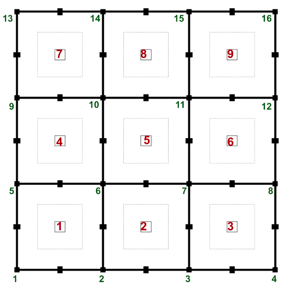

CS684: Embedded System Course
Lab 5: Line Follower Robot
Aim
The purpose of this task is to Implement Line Following Algorithm for Alpha Bot.
In this Task, teams must write a line following algorithm for the bot and demonstrate the same by traversing on the provided Arena.
Description:
Write a code to traverse the Bot from Node 1 to Node 12.
Refer to the arena image given below:

After reaching destination node, the robot should stop to indicate the end of the task.
Note: Lab is focused on Line following and not on Path Traversal. Hence, students can directly provide the path (from node 1 to node 12) in code.
Teams may refer to functions of tracker sensor, motion and pwm provided during class.
Programming Instructions:
- Motor interfacing and PWM initialisation code should be in Embedded C.
- Tracker sensor Interfacing code should be in Embedded C.
- Write the logic about velocity control of the motors based on sensor values in Statechart or Heptagon.
- Path traversal (direct or indirect) implementation should be in Statechart or Heptagon.
- Values received from tracker sensor should be given to the Statechart or Heptagon.
- Velocity values are output of Statechart or Heptagon
Note: Do not use Arduino functions for motor and tracker sensors. For debugging, you can use serial functions of arduino library.
Video Instructions:
While recording the video take care of the following steps.
-
Place the Alpha Bot at the start node (node 1) and facing any direction.
-
The camera angle should be adjusted so that the nodes it will be traveling while following the line should be visible.
-
The Alpha Bot should move from one node to another. It should start from Node 1 and should go to Node 12.
-
After reaching destination node, the robot should stop.